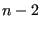
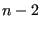
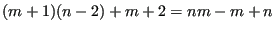
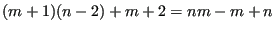
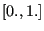
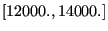

Next: *STEP Up: Input deck format Previous: *STATIC Contents
Keyword type: step
This procedure is used to calculate the steady state response of a structure subject to periodic loading. Although the deformation up to the onset of the dynamic calculation can be nonlinear, this procedure is basically linear and assumes that the response can be written as a linear combination of the lowest modes of the structure. To this end, these modes must have been calculated in a previous *FREQUENCY,STORAGE=YES step (not necessarily in the same calculation). In the *STEADY STATE DYNAMICS step the eigenfrequencies, modes, stiffness and mass matrix are recovered from the file jobname.eig.
For harmonic loading the steady state response is
calculated for the frequency range specified by the user. The number of data
points within this range  can also be defined by the user, default is 20,
minimum is 2 (if the user specifies
can also be defined by the user, default is 20,
minimum is 2 (if the user specifies  to be less than 2, the default is taken). If
no eigenvalues occur within the specified range, this is the total number of
data points taken, i.e. including the lower frequency bound and the
upper frequency bound. If one or more eigenvalues fall within the specified range, 
points are taken in between the lower frequency bound and the lowest eigenfrequency
in the range, between any subsequent eigenfrequencies in the range and
points in between the highest eigenfrequency in the range and upper
frequency bound. Consequently, if
to be less than 2, the default is taken). If
no eigenvalues occur within the specified range, this is the total number of
data points taken, i.e. including the lower frequency bound and the
upper frequency bound. If one or more eigenvalues fall within the specified range, 
points are taken in between the lower frequency bound and the lowest eigenfrequency
in the range, between any subsequent eigenfrequencies in the range and
points in between the highest eigenfrequency in the range and upper
frequency bound. Consequently, if  eigenfrequencies belong to the specified
range,
 data points are taken. They are equally spaced
in between the fixed points (lower frequency bound, upper frequency bound and
eigenfrequencies) if the user specifies a bias equal to 1. If a different bias
is specified, the data points are concentrated about the fixed points. Default
for the bias is 3., minimum value allowed is 1. (if the user specifies a value
less than 1., the default is taken).
The number of eigenmodes used is taken from the previous *FREQUENCY
step. Since a steady state dynamics step is a perturbation step, all previous loading
is removed. The
loading defined within the step is multiplied by
the amplitude history for each load as specified by the AMPLITUDE parameter on
the loading card, if any. In this context the AMPLITUDE cards are interpreted
as load factor versus frequency. Loading histories extending beyond the amplitude
frequency scale are extrapolated in a constant way. The absence of the
AMPLITUDE parameter on a loading card leads to a frequency independent load.
eigenfrequencies belong to the specified
range,
 data points are taken. They are equally spaced
in between the fixed points (lower frequency bound, upper frequency bound and
eigenfrequencies) if the user specifies a bias equal to 1. If a different bias
is specified, the data points are concentrated about the fixed points. Default
for the bias is 3., minimum value allowed is 1. (if the user specifies a value
less than 1., the default is taken).
The number of eigenmodes used is taken from the previous *FREQUENCY
step. Since a steady state dynamics step is a perturbation step, all previous loading
is removed. The
loading defined within the step is multiplied by
the amplitude history for each load as specified by the AMPLITUDE parameter on
the loading card, if any. In this context the AMPLITUDE cards are interpreted
as load factor versus frequency. Loading histories extending beyond the amplitude
frequency scale are extrapolated in a constant way. The absence of the
AMPLITUDE parameter on a loading card leads to a frequency independent load.
For nonharmonic loading the loading across one period is not harmonic and has to be specified in the time domain. To this end the user can specify the starting time and the final time of one period and describe the loading within this period with *AMPLITUDE cards. Default is the interval  and step loading. Notice that for nonharmonic loading the *AMPLITUDE cards describe amplitude versus TIME. Furthermore, the user can specify the number of Fourier terms the nonharmonic loading is expanded in (default:20). The remaining input is the same as for harmonic loading, i.e. the user specifies a frequency range, the number of data points within this range and the bias.
There are two optional parameters: HARMONIC and SOLVER. HARMONIC=YES (default) indicates that the periodic loading is harmonic, HARMONIC=NO specifies nonharmonic periodic loading. The parameter SOLVER determines the package used to solve for the steady state solution in the presence of nonzero displacement boundary conditions. The following solvers can be selected:
Default is the first solver which has been installed of the following list: SGI, PaStiX, PARDISO, SPOOLES and TAUCS. If none is installed, an error is issued.
The SGI solver should by now be considered as outdated.SPOOLES is very fast, but has no
out-of-core capability: the size of systems you can solve is limited by your
RAM memory. With 32GB of RAM you can solve up to 1,000,000 equations. TAUCS is
also good, but my experience is limited to the  decomposition, which
only applies to positive definite systems. It has an out-of-core capability
and also offers a
decomposition, which
only applies to positive definite systems. It has an out-of-core capability
and also offers a  decomposition, however, I was not able to run either of
them so far. PARDISO is the Intel proprietary solver and is about a factor of
two faster than SPOOLES. The most recent solver we tried is the freeware
solver PaStiX from INRIA. It is
really fast and can use the GPU. For large problems and a high end Nvidea graphical
card (32 GB of RAM) we got an acceleration of a factor between 3 and 8
compared to PARDISO. We modified PaStiX for this, therefore you have to
download PaStiX from our website and compile it for your system. This can be
slightly tricky, however, it is worth it!
decomposition, however, I was not able to run either of
them so far. PARDISO is the Intel proprietary solver and is about a factor of
two faster than SPOOLES. The most recent solver we tried is the freeware
solver PaStiX from INRIA. It is
really fast and can use the GPU. For large problems and a high end Nvidea graphical
card (32 GB of RAM) we got an acceleration of a factor between 3 and 8
compared to PARDISO. We modified PaStiX for this, therefore you have to
download PaStiX from our website and compile it for your system. This can be
slightly tricky, however, it is worth it!
First line:
Example: *STEADY STATE DYNAMICS 12000.,14000.,5,4.
defines a steady state dynamics procedure in the frequency interval  with 5 data points and a bias of 4.
Example: *STEADY STATE DYNAMICS,HARMONIC=NO 2.,4.,3,1.,11,0.,.5
defines a steady state dynamics procedure in the time domain. A complete period is defined in the time interval [0.,0.5], and 11 Fourier terms will be taken. Calculations will be performed for three equidistant points in the frequency interval [2.,4.], i.e. for 2 cycles/time, 3 cycles/time and 4 cycles/time, provided there are no eigenfrequencies in this interval.
Example files: beamdy8, beamdy9, beamdy10, beamdy11, beamdy12, beamdy13.